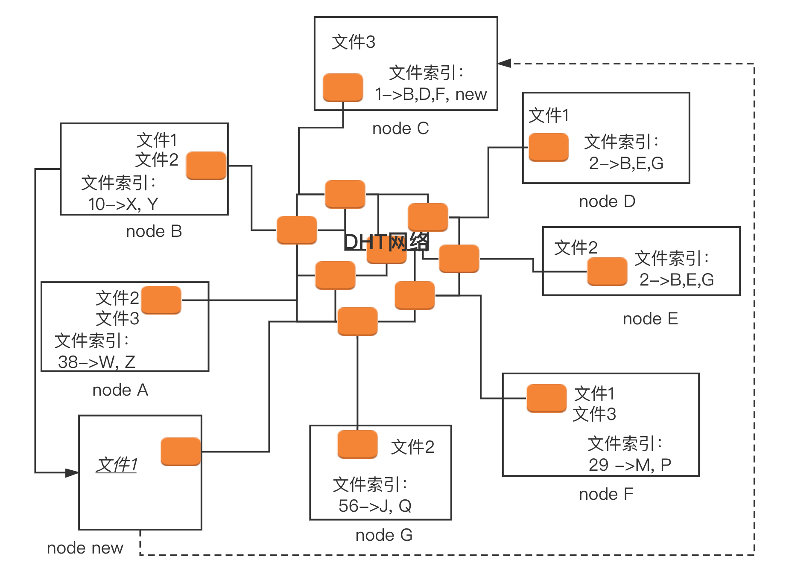
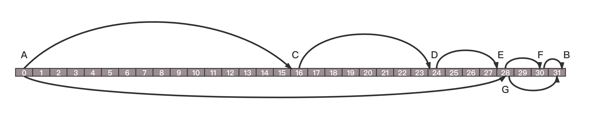

- 00 开篇词 想成为技术牛人？先搞定网络协议！.md
- 01 为什么要学习网络协议？.md
- 02 网络分层的真实含义是什么？.md
- 03 ifconfig：最熟悉又陌生的命令行.md
- 04 DHCP与PXE：IP是怎么来的，又是怎么没的？.md
- 05 从物理层到MAC层：如何在宿舍里自己组网玩联机游戏？.md
- 06 交换机与VLAN：办公室太复杂，我要回学校.md
- 07 ICMP与ping：投石问路的侦察兵.md
- 08 世界这么大，我想出网关：欧洲十国游与玄奘西行.md
- 09 路由协议：西出网关无故人，敢问路在何方.md
- 10 UDP协议：因性善而简单，难免碰到“城会玩”.md
- 11 TCP协议（上）：因性恶而复杂，先恶后善反轻松.md
- 12 TCP协议（下）：西行必定多妖孽，恒心智慧消磨难.md
- 13 套接字Socket：Talk is cheap, show me the code.md
- 14 HTTP协议：看个新闻原来这么麻烦.md
- 15 HTTPS协议：点外卖的过程原来这么复杂.md
- 16 流媒体协议：如何在直播里看到美女帅哥？.md
- 17 P2P协议：我下小电影，99%急死你.md
- 18 DNS协议：网络世界的地址簿.md
- 19 HttpDNS：网络世界的地址簿也会指错路.md
- 20 CDN：你去小卖部取过快递么？.md
- 21 数据中心：我是开发商，自己拿地盖别墅.md
- 22 VPN：朝中有人好做官.md
- 23 移动网络：去巴塞罗那，手机也上不了脸书.md
- 24 云中网络：自己拿地成本高，购买公寓更灵活.md
- 25 软件定义网络：共享基础设施的小区物业管理办法.md
- 26 云中的网络安全：虽然不是土豪，也需要基本安全和保障.md
- 27 云中的网络QoS：邻居疯狂下电影，我该怎么办？.md
- 28 云中网络的隔离GRE、VXLAN：虽然住一个小区，也要保护隐私.md
- 29 容器网络：来去自由的日子，不买公寓去合租.md
- 30 容器网络之Flannel：每人一亩三分地.md
- 31 容器网络之Calico：为高效说出善意的谎言.md
- 32 RPC协议综述：远在天边，近在眼前.md
- 33 基于XML的SOAP协议：不要说NBA，请说美国职业篮球联赛.md
- 34 基于JSON的RESTful接口协议：我不关心过程，请给我结果.md
- 35 二进制类RPC协议：还是叫NBA吧，总说全称多费劲.md
- 36 跨语言类RPC协议：交流之前，双方先来个专业术语表.md
- 37 知识串：用双十一的故事串起碎片的网络协议（上）.md
- 38 知识串：用双十一的故事串起碎片的网络协议（中）.md
- 39 知识串：用双十一的故事串起碎片的网络协议（下）.md
- 40 搭建一个网络实验环境：授人以鱼不如授人以渔.md
- 加餐1 创作故事：我是如何创作“趣谈网络协议”专栏的？.md
- 协议专栏特别福利 答疑解惑1期.md
- 协议专栏特别福利 答疑解惑2期.md
- 协议专栏特别福利 答疑解惑3期.md
- 协议专栏特别福利 答疑解惑4期.md
- 协议专栏特别福利 答疑解惑5期.md
- 结束语 放弃完美主义，执行力就是限时限量认真完成.md
17 P2P协议：我下小电影，99%急死你
如果你想下载一个电影，一般会通过什么方式呢？
当然，最简单的方式就是通过HTTP进行下载。但是相信你有过这样的体验，通过浏览器下载的时候，只要文件稍微大点，下载的速度就奇慢无比。
还有种下载文件的方式，就是通过FTP，也即文件传输协议。FTP采用两个TCP连接来传输一个文件。
-
控制连接：服务器以被动的方式，打开众所周知用于FTP的端口21，客户端则主动发起连接。该连接将命令从客户端传给服务器，并传回服务器的应答。常用的命令有：list——获取文件目录；reter——取一个文件；store——存一个文件。
-
数据连接：每当一个文件在客户端与服务器之间传输时，就创建一个数据连接。
FTP的两种工作模式
每传输一个文件，都要建立一个全新的数据连接。FTP有两种工作模式，分别是主动模式（PORT）和被动模式（PASV），这些都是站在FTP服务器的角度来说的。
主动模式下，客户端随机打开一个大于1024的端口N，向服务器的命令端口21发起连接，同时开放N+1端口监听，并向服务器发出 “port N+1” 命令，由服务器从自己的数据端口20，主动连接到客户端指定的数据端口N+1。
被动模式下，当开启一个FTP连接时，客户端打开两个任意的本地端口N（大于1024）和N+1。第一个端口连接服务器的21端口，提交PASV命令。然后，服务器会开启一个任意的端口P（大于1024），返回“227 entering passive mode”消息，里面有FTP服务器开放的用来进行数据传输的端口。客户端收到消息取得端口号之后，会通过N+1号端口连接服务器的端口P，然后在两个端口之间进行数据传输。
P2P是什么？
但是无论是HTTP的方式，还是FTP的方式，都有一个比较大的缺点，就是难以解决单一服务器的带宽压力， 因为它们使用的都是传统的客户端服务器的方式。
后来，一种创新的、称为P2P的方式流行起来。P2P就是peer-to-peer。资源开始并不集中地存储在某些设备上，而是分散地存储在多台设备上。这些设备我们姑且称为peer。
想要下载一个文件的时候，你只要得到那些已经存在了文件的peer，并和这些peer之间，建立点对点的连接，而不需要到中心服务器上，就可以就近下载文件。一旦下载了文件，你也就成为peer中的一员，你旁边的那些机器，也可能会选择从你这里下载文件，所以当你使用P2P软件的时候，例如BitTorrent，往往能够看到，既有下载流量，也有上传的流量，也即你自己也加入了这个P2P的网络，自己从别人那里下载，同时也提供给其他人下载。可以想象，这种方式，参与的人越多，下载速度越快，一切完美。
种子（.torrent）文件
但是有一个问题，当你想下载一个文件的时候，怎么知道哪些peer有这个文件呢？
这就用到种子啦，也即咱们比较熟悉的**.torrent文件**。.torrent文件由两部分组成，分别是：announce（tracker URL）和文件信息。
文件信息里面有这些内容。
-
info区：这里指定的是该种子有几个文件、文件有多长、目录结构，以及目录和文件的名字。
-
Name字段：指定顶层目录名字。
-
每个段的大小：BitTorrent（简称BT）协议把一个文件分成很多个小段，然后分段下载。
-
段哈希值：将整个种子中，每个段的SHA-1哈希值拼在一起。
下载时，BT客户端首先解析.torrent文件，得到tracker地址，然后连接tracker服务器。tracker服务器回应下载者的请求，将其他下载者（包括发布者）的IP提供给下载者。下载者再连接其他下载者，根据.torrent文件，两者分别对方告知自己已经有的块，然后交换对方没有的数据。此时不需要其他服务器参与，并分散了单个线路上的数据流量，因此减轻了服务器的负担。
下载者每得到一个块，需要算出下载块的Hash验证码，并与.torrent文件中的对比。如果一样，则说明块正确，不一样则需要重新下载这个块。这种规定是为了解决下载内容的准确性问题。
从这个过程也可以看出，这种方式特别依赖tracker。tracker需要收集下载者信息的服务器，并将此信息提供给其他下载者，使下载者们相互连接起来，传输数据。虽然下载的过程是非中心化的，但是加入这个P2P网络的时候，都需要借助tracker中心服务器，这个服务器是用来登记有哪些用户在请求哪些资源。
所以，这种工作方式有一个弊端，一旦tracker服务器出现故障或者线路遭到屏蔽，BT工具就无法正常工作了。
去中心化网络（DHT）
那能不能彻底非中心化呢？
于是，后来就有了一种叫作DHT（Distributed Hash Table）的去中心化网络。每个加入这个DHT网络的人，都要负责存储这个网络里的资源信息和其他成员的联系信息，相当于所有人一起构成了一个庞大的分布式存储数据库。
有一种著名的DHT协议，叫Kademlia协议。这个和区块链的概念一样，很抽象，我来详细讲一下这个协议。
任何一个BitTorrent启动之后，它都有两个角色。一个是peer，监听一个TCP端口，用来上传和下载文件，这个角色表明，我这里有某个文件。另一个角色DHT node，监听一个UDP的端口，通过这个角色，这个节点加入了一个DHT的网络。
- 在DHT网络里面，每一个DHT node都有一个ID。这个ID是一个很长的串。每个DHT node都有责任掌握一些知识，也就是文件索引，也即它应该知道某些文件是保存在哪些节点上。它只需要有这些知识就可以了，而它自己本身不一定就是保存这个文件的节点。
哈希值
当然，每个DHT node不会有全局的知识，也即不知道所有的文件保存在哪里，它只需要知道一部分。那应该知道哪一部分呢？这就需要用哈希算法计算出来。
每个文件可以计算出一个哈希值，而DHT node的ID是和哈希值相同长度的串。
DHT算法是这样规定的：如果一个文件计算出一个哈希值，则和这个哈希值一样的那个DHT node，就有责任知道从哪里下载这个文件，即便它自己没保存这个文件。
当然不一定这么巧，总能找到和哈希值一模一样的，有可能一模一样的DHT node也下线了，所以DHT算法还规定：除了一模一样的那个DHT node应该知道，ID和这个哈希值非常接近的N个DHT node也应该知道。
什么叫和哈希值接近呢？例如只修改了最后一位，就很接近；修改了倒数2位，也不远；修改了倒数3位，也可以接受。总之，凑齐了规定的N这个数就行。
刚才那个图里，文件1通过哈希运算，得到匹配ID的DHT node为node C，当然还会有其他的，我这里没有画出来。所以，node C有责任知道文件1的存放地址，虽然node C本身没有存放文件1。
同理，文件2通过哈希运算，得到匹配ID的DHT node为node E，但是node D和E的ID值很近，所以node D也知道。当然，文件2本身没有必要一定在node D和E里，但是碰巧这里就在E那有一份。
接下来一个新的节点node new上线了。如果想下载文件1，它首先要加入DHT网络，如何加入呢？
在这种模式下，种子.torrent文件里面就不再是tracker的地址了，而是一个list的node的地址，而所有这些node都是已经在DHT网络里面的。当然随着时间的推移，很可能有退出的，有下线的，但是我们假设，不会所有的都联系不上，总有一个能联系上。
node new只要在种子里面找到一个DHT node，就加入了网络。
node new会计算文件1的哈希值，并根据这个哈希值了解到，和这个哈希值匹配，或者很接近的node上知道如何下载这个文件，例如计算出来的哈希值就是node C。
但是node new不知道怎么联系上node C，因为种子里面的node列表里面很可能没有node C，但是它可以问，DHT网络特别像一个社交网络，node new只有去它能联系上的node问，你们知道不知道node C的联系方式呀？
在DHT网络中，每个node都保存了一定的联系方式，但是肯定没有node的所有联系方式。DHT网络中，节点之间通过互相通信，也会交流联系方式，也会删除联系方式。和人们的方式一样，你有你的朋友圈，你的朋友有它的朋友圈，你们互相加微信，就互相认识了，过一段时间不联系，就删除朋友关系。
有个理论是，社交网络中，任何两个人直接的距离不超过六度，也即你想联系比尔盖茨，也就六个人就能够联系到了。
所以，node new想联系node C，就去万能的朋友圈去问，并且求转发，朋友再问朋友，很快就能找到。如果找不到C，也能找到和C的ID很像的节点，它们也知道如何下载文件1。
在node C上，告诉node new，下载文件1，要去B、D、 F，于是node new选择和node B进行peer连接，开始下载，它一旦开始下载，自己本地也有文件1了，于是node new告诉node C以及和node C的ID很像的那些节点，我也有文件1了，可以加入那个文件拥有者列表了。
但是你会发现node new上没有文件索引，但是根据哈希算法，一定会有某些文件的哈希值是和node new的ID匹配上的。在DHT网络中，会有节点告诉它，你既然加入了咱们这个网络，你也有责任知道某些文件的下载地址。
好了，一切都分布式了。
这里面遗留几个细节的问题。
- DHT node ID以及文件哈希是个什么东西？
节点ID是一个随机选择的160bits（20字节）空间，文件的哈希也使用这样的160bits空间。
- 所谓ID相似，具体到什么程度算相似？
在Kademlia网络中，距离是通过异或（XOR）计算的。我们就不以160bits举例了。我们以5位来举例。
01010与01000的距离，就是两个ID之间的异或值，为00010，也即为2。 01010与00010的距离为01000，也即为8,。01010与00011的距离为01001，也即8+1=9 。以此类推，高位不同的，表示距离更远一些；低位不同的，表示距离更近一些，总的距离为所有的不同的位的距离之和。
这个距离不能比喻为地理位置，因为在Kademlia网络中，位置近不算近，ID近才算近，所以我把这个距离比喻为社交距离，也即在朋友圈中的距离，或者社交网络中的距离。这个和你住的位置没有关系，和人的经历关系比较大。
还是以5位ID来举例，就像在领英中，排第一位的表示最近一份工作在哪里，第二位的表示上一份工作在哪里，然后第三位的是上上份工作，第四位的是研究生在哪里读，第五位的表示大学在哪里读。
如果你是一个猎头，在上面找候选人，当然最近的那份工作是最重要的。而对于工作经历越丰富的候选人，大学在哪里读的反而越不重要。
DHT网络中的朋友圈是怎么维护的？
就像人一样，虽然我们常联系人的只有少数，但是朋友圈里肯定是远近都有。DHT网络的朋友圈也是一样，远近都有，并且按距离分层。
假设某个节点的ID为01010，如果一个节点的ID，前面所有位数都与它相同，只有最后1位不同。这样的节点只有1个，为01011。与基础节点的异或值为00001，即距离为1；对于01010而言，这样的节点归为“k-bucket 1”。
如果一个节点的ID，前面所有位数都相同，从倒数第2位开始不同，这样的节点只有2个，即01000和01001，与基础节点的异或值为00010和00011，即距离范围为2和3；对于01010而言，这样的节点归为“k-bucket 2”。
如果一个节点的ID，前面所有位数相同，从倒数第i位开始不同，这样的节点只有2^(i-1)个，与基础节点的距离范围为[2^(i-1), 2^i)；对于01010而言，这样的节点归为“k-bucket i”。
最终到从倒数160位就开始都不同。
你会发现，差距越大，陌生人越多，但是朋友圈不能都放下，所以每一层都只放K个，这是参数可以配置。
DHT网络是如何查找朋友的？
假设，node A 的ID为00110，要找node B ID为10000，异或距离为10110，距离范围在[2^4, 2^5)，所以这个目标节点可能在“k-bucket 5”中，这就说明B的ID与A的ID从第5位开始不同，所以B可能在“k-bucket 5”中。
然后，A看看自己的k-bucket 5有没有B。如果有，太好了，找到你了；如果没有，在k-bucket 5里随便找一个C。因为是二进制，C、B都和A的第5位不同，那么C的ID第5位肯定与B相同，即它与B的距离会小于2^4，相当于比A、B之间的距离缩短了一半以上。
再请求C，在它自己的通讯录里，按同样的查找方式找一下B。如果C知道B，就告诉A；如果C也不知道B，那C按同样的搜索方法，可以在自己的通讯录里找到一个离B更近的D朋友（D、B之间距离小于2^3），把D推荐给A，A请求D进行下一步查找。
Kademlia的这种查询机制，是通过折半查找的方式来收缩范围，对于总的节点数目为N，最多只需要查询log2(N)次，就能够找到。
例如，图中这个最差的情况。

A和B每一位都不一样，所以相差31，A找到的朋友C，不巧正好在中间。和A的距离是16，和B距离为15，于是C去自己朋友圈找的时候，不巧找到D，正好又在中间，距离C为8，距离B为7。于是D去自己朋友圈找的时候，不巧找到E，正好又在中间，距离D为4，距离B为3，E在朋友圈找到F，距离E为2，距离B为1，最终在F的朋友圈距离1的地方找到B。当然这是最最不巧的情况，每次找到的朋友都不远不近，正好在中间。
如果碰巧了，在A的朋友圈里面有G，距离B只有3，然后在G的朋友圈里面一下子就找到了B，两次就找到了。
在DHT网络中，朋友之间怎么沟通呢？
Kademlia算法中，每个节点只有4个指令。
-
PING：测试一个节点是否在线，还活着没，相当于打个电话，看还能打通不。
-
STORE：要求一个节点存储一份数据，既然加入了组织，有义务保存一份数据。
-
FIND_NODE：根据节点ID查找一个节点，就是给一个160位的ID，通过上面朋友圈的方式找到那个节点。
-
FIND_VALUE：根据KEY查找一个数据，实则上跟FIND_NODE非常类似。KEY就是文件对应的160位的ID，就是要找到保存了文件的节点。
DHT网络中，朋友圈如何更新呢？
-
每个bucket里的节点，都按最后一次接触的时间倒序排列，这就相当于，朋友圈里面最近联系过的人往往是最熟的。
-
每次执行四个指令中的任意一个都会触发更新。
-
当一个节点与自己接触时，检查它是否已经在k-bucket中，也就是说是否已经在朋友圈。如果在，那么将它挪到k-bucket列表的最底，也就是最新的位置，刚联系过，就置顶一下，方便以后多联系；如果不在，新的联系人要不要加到通讯录里面呢？假设通讯录已满的情况，PING一下列表最上面，也即最旧的一个节点。如果PING通了，将旧节点挪到列表最底，并丢弃新节点，老朋友还是留一下；如果PING不通，删除旧节点，并将新节点加入列表，这人联系不上了，删了吧。
这个机制保证了任意节点加入和离开都不影响整体网络。
小结
好了，今天的讲解就到这里了，我们总结一下：
-
下载一个文件可以使用HTTP或FTP，这两种都是集中下载的方式，而P2P则换了一种思路，采取非中心化下载的方式；
-
P2P也是有两种，一种是依赖于tracker的，也即元数据集中，文件数据分散；另一种是基于分布式的哈希算法，元数据和文件数据全部分散。
接下来，给你留两个思考题：
-
除了这种去中心化分布式哈希的算法，你还能想到其他的应用场景吗？
-
在前面所有的章节中，要下载一个文件，都需要使用域名。但是网络通信是使用IP的，那你知道怎么实现两者的映射机制吗？
我们的专栏马上更新过半了，不知你掌握得如何？每节课后我留的思考题，你都有没有认真思考，并在留言区写下答案呢？我会从已发布的文章中选出一批认真留言的同学，赠送学习奖励礼券和我整理的独家网络协议知识图谱。
欢迎你留言和我讨论。趣谈网络协议，我们下期见！
© 2019 - 2023 Liangliang Lee. Powered by Vert.x and hexo-theme-book.